Fuse (Combine) the Fusion Sidecar with the Panther Instrument
 Route the Fusion COP communication and USB cables out of the Fusion and over to the left side of the Panther System.
Route the Fusion COP communication and USB cables out of the Fusion and over to the left side of the Panther System.
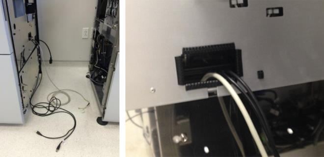
- Route the Fusion communications cable up through the rear left of the Panther chassis cable clamps along with the other existing COP cables. This cable should route behind the power cables and behind the cooling line.

Caution—Make sure that the cables are NOT routed through the Panther service drawer frame. Also, the routing of the cable should not interfere with the opening/closing of the service drawer. 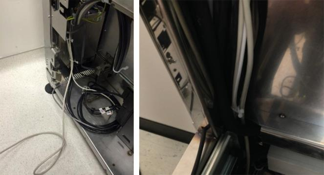
- Clamp the Fusion communication cables with the white cable clamps located below the Panther COP PCB.
- After connecting the Fusion connector into Slot 11 (J11), install the terminator into Slot 12 (J12).
The smaller orange connector will connect to the only 5-pin orange-colored jack (indicated by the circle in the photo below). - Connect all the Panther and Fusion USB cables into the back of the PC as per your PC.
- Label each USB cable for later identification with a white label tag, tape, etc.
- Connect any optional cables at this time before fusing (firewall power cord, Pro360 cat5 cable, LIS cat5 cable, or serial LIS cable).
- Connect the Fusion male power connector into the Panther power supply and ensure that the Panther power switch is in the “ON” position. The Fusion power switch should still be in the “OFF” position.
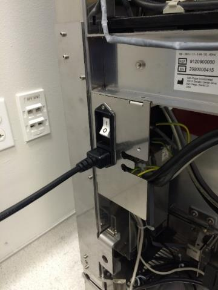
- Ensure that all four Fusion clamps are flipped inside the Fusion. Otherwise, they will interfere with the Panther when fusing the Fusion.
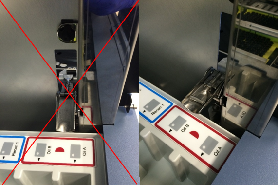
- Carefully roll the Fusion into the Panther System. Make sure that the Handoff Station and the Elution Buffer arm do not come into contact with the Panther frame during this movement. Ensure that the Fusion mounting pins insert into the corresponding mounting holes on the Panther System.
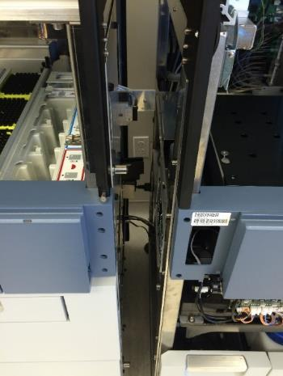
- After the Fusion has been inserted onto the Panther System, clamp all four Fusion clamps onto the Panther clips.
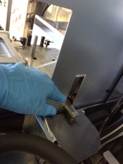
- Tighten all four Fusion wheel lock-nuts.
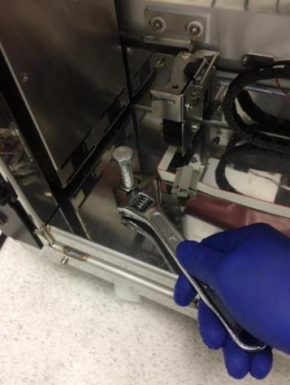
- Attach intermediary Fusion front cover panel.
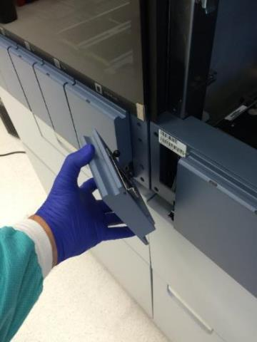
- Place the Panther top front and rear black trim pieces onto the Fusion. Secure the trim with the three 3mm screws from the Panther.
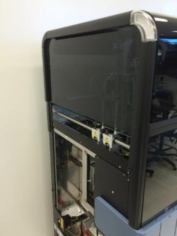
- Using a 3mm hex driver, secure the power switch face plate you removed from the Panther in an earlier step.
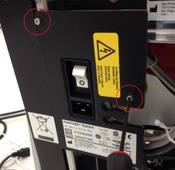
- Attach the power cable removed from the Panther System into the left side of the newly joined Fusion.
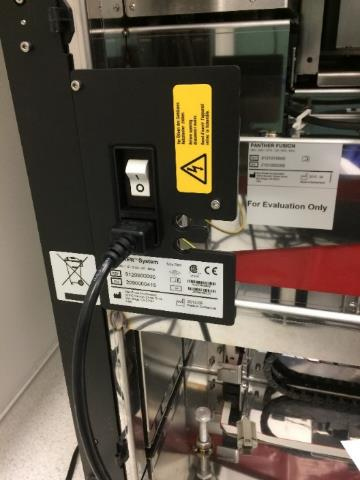
- Lower the Fusion leveling foot using an adjustable wrench. The foot should be lowered just enough such that the left side of the system is slightly raised to relieve stress on the Panther frame.
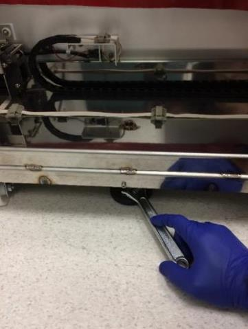
- Place the Panther bottom black trim piece onto the Fusion. Secure the trim with the three 3mm screws from the Panther.
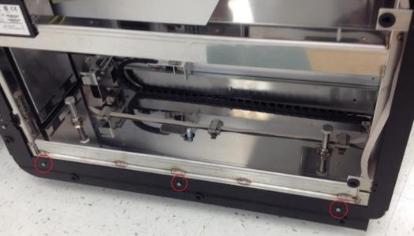
- Place all grey/white trim pieces from the Panther onto the respective black trim pieces on the Fusion.

Note—The rear grey/white trim piece may not be able to be screwed into the Fusion. If this is the case, leave the trim unscrewed. 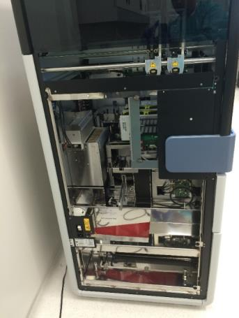
- Update the Output Voltage Settings on the UPS
Note—
ALL Fusion Installs require the Output Voltage on the UPS to be set at 220V. - Connect the power cables for the Fusion and the Fusion workstation PC into the UPS that was previously used by the Panther. Ensure the two power cables are NOT plugged into the same segment on the UPS.
Caution—Ensure the correct UPS is used as required by location (Country, region, etc.) - Place the Panther left door onto the Fusion. Ensure that the door is sitting on all three hinges.
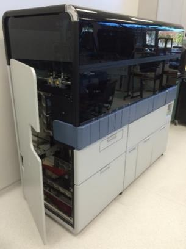
- Power on the Fusion and the Fusion workstation PC.
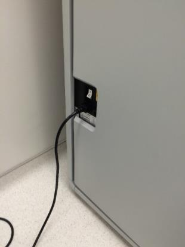
- If this is a new Panther System install, perform the following procedures:

 button at the top of the page to send feedback, comments, or change requests.
button at the top of the page to send feedback, comments, or change requests.